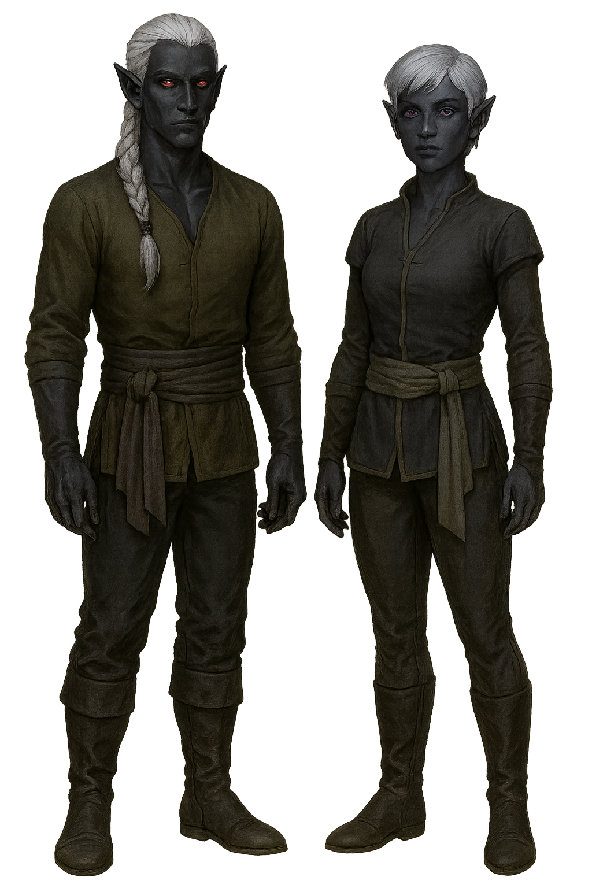

Drow Elf
Overview
Drow elves of Eberron originate from Xen'drik, the ancient land of giants and secrets. They are not the evil underdwellers of other settings, but tribal, spiritual, and elemental in nature.
Appearance
Drow elves of Eberron have obsidian or deep purple skin with white or silver hair. Their eyes glow red, blue, or violet in low light. Their clothing is tribal and functional, often reflecting their elemental allegiance.
Culture and Society
Drow follow powerful elemental or ancestral traditions. Many serve the Sulatar or Umbragen clans. Their magic is primal, often bound to fire, shadow, or the land itself.
Eberron's drow culture is deeply tribal and elemental. Some clans worship fire, others shadow, and some blend divine reverence with druidic practice. The Sulatar drow revere fire and forge. The Umbragen seek power through shadow and forgotten magics. Xen'drik’s dangerous jungles foster tight-knit communities focused on survival and ancient tradition.
Major Settlements
Drow inhabit the deep jungle ruins and volcanic temples of Xen'drik. Major tribes include the Sulatar and Umbragen.
Gameplay Traits
- Ability Scores: +2 Dexterity, +1 Charisma
- Age: Mature at 100, live to 750+
- Size: Medium
- Speed: 30 feet
- Superior Darkvision: 120 feet
- Sunlight Sensitivity: Disadvantage on attack rolls and Perception in direct sunlight
- Drow Magic: Dancing Lights cantrip; Faerie Fire at 3rd level once per long rest
- Keen Senses: Perception proficiency
- Fey Ancestry: Charm resistance, sleep immunity
- Trance: 4-hour meditation
- Languages: Common, Elvish, Drow dialect